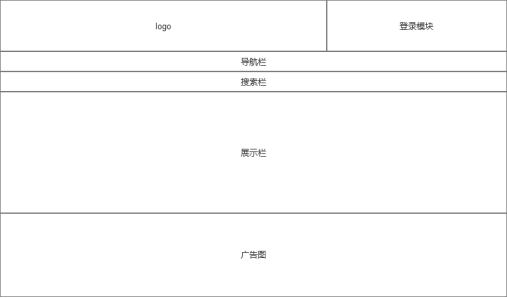
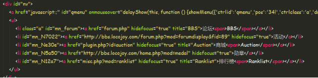
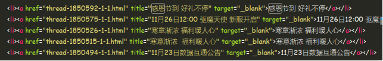
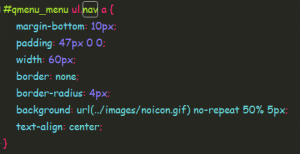
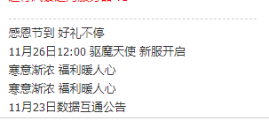
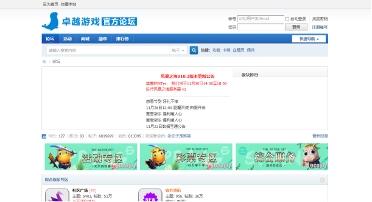
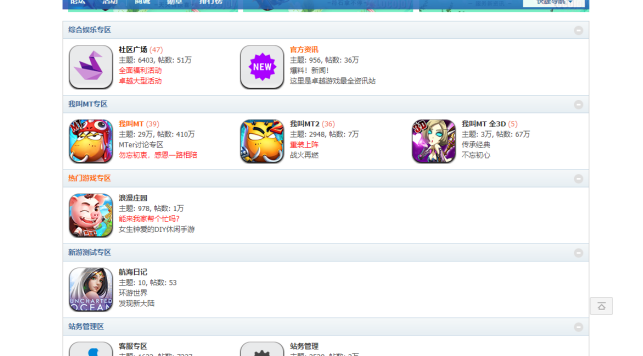
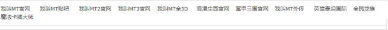

实 验 报 告
学院：计算机科学学院 专业： 计算机应用技术 2020年 12月8日
姓 名 | 学 号 | |||||
班 级 | 指导老师 | 邓燕灵 | ||||
课程名称 | 《Web前端工程师综合实践》 | 成 绩 | ||||
实验名称 | 基于HTML5+CSS3的游戏坛子网站首页的设计 | |||||
1．实验目的 1）熟练掌握HTML5+CSS3布局方法；掌握FLEX布局方法。 2）学会使用浏览器开发者工具分析、调试网站元素的结构、样式； 3）学习了解HTML5语义化标签、CSS3动画属性基本用法； 4）学会使用预定义基础样式重置默认样式。 5）领会CSS的盒模型、层模型的内涵。 6）学会掌握选择器的使用、及标记属性的书写、命名规范。 | ||||||
2．实验内容 （1）搜集整理网页素材 （2）设计网页的布局结构并形成HTML文件 （3）添加网页中的文字与图片内容 （4）设计CSS样式表，规范网页的布局、美化网页的外观 （5）调试与修改 | ||||||
3．实验环境 (1)WIN7操作系统 (2)HBuilderX编辑器 (3)谷歌浏览器 | ||||||
4．实验方法和步骤（含设计） 先设计整个网页的框架： 大致分为logo，登录，导航，搜索，展示和广告模块  导航栏代码： 使用无序列表制作导航栏，通过选择器选择到div#nv下的ul，设置其样式  效果图： 首页展示栏显示最近热帖，每一个热帖宽度占33%居中在展示栏中间，  样式表： 效果图：   | ||||||
5．程序及测试结果    | ||||||
6．实验分析与体会 标记种类分为两种：围堵标记和空标记。围堵标记是以起始标记及终结标记将文字围住，令其达到预期显示效果。 也就是说，标记是成对出现的，例如 <b>Creation of Webpage</b> ，其中<b></b> 便称为围堵标记。它以起始标记<b>及终结标记</b>标示文字 Creation of webpage ，令其显示成粗体，两者失其一都会发生错误显示。 空标记是指标记单独出现，只有起始标记没有终结标记。 例如 <BR>，它的作用便是将标记后所有东西显示于下一行，可见终结标记于它是没意义的， 但有些人会为空标记加上终结标记，这是为方便记认而己，对 HTML 没有影响。 日期 ： 2020 年 12 月 8 日 | ||||||
教师评语 签名： 年 月 日 | ||||||